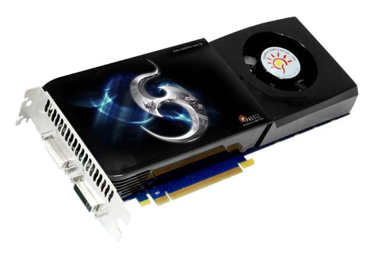

Как собрать компьютер
Шаг1.Потборка
Для начала сборки нужно подобрать все, что нужно, то есть: Материнская Плата, Видео и Аудио карты, Процесcор и тд.
Процесcор - Главная часть Компьютера,
он следит за всеми остальными компанентами, является одной из самых сложных состовляюших компьютера.
К подбору следует отнестись с умом.
 Видео карта - Самая важная для нас составляющая, от нее зависит практически весь наш игровой процесс, чем выше характеристики Видеокарты тем приятнее играть, но помните стоимость Видеокарты пропорционально ее характеристикам. К подбору подходите от того какая у вас Материнская Плата и Процесор иначе сгорит все.

К подбору можно отнестись не очень серьезно.
Материнская плата – вторая самая важная часть компьютера. Она связывает все его части в единое целое, координирует их работу. Если она выйдет из строя, то, скорее всего, придётся менять весь компьютер, ведь все комплектующие подключаются именно к ней, имеют с ней «совместимость», она является связующим звеном.
Монитор – действительно очень важная вещь. С точки зрения вашего здоровья – самая важная, так как от правильного выбора монитора зависит не только качество картинки, но ваше здоровье и работоспособность
Корпус компьютера- Внешний вид компьютера и его прочность. От него нечего не зависит в плане производительности поэтому смело выбирайте самый красивый в магазине или на сайте
Жесткий диск- это хранилище ваших данных. Можно сказать чем больше ваше хранилише тем больше игр можно иметь одновременно. Сдесь сказать нечего выбирайте сами какой Жесткий диск вам нужен, все они похожи.
Оперативная память – важное условие быстродействия компьютера. В ней хранятся данные, с которыми вы работаете в данный момент. При выключении компьютера или перезагрузке операционной системы, эти данные автоматически стираются. Чем больше у вас памяти, тем больше обрабатывается данных в единицу времени, тем быстрее работает компьютер.
Blu-Ray - это приводы нового поколения, позволяющие читать диски вместимостью до 54 Гб. С момента их появления, цена на новые модели заметно снизилась, поэтому, если вам позволяют средства, то смело покупайте Blu-Ray.